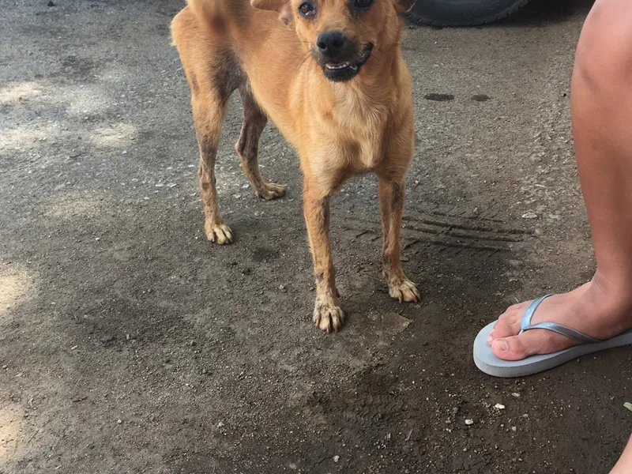
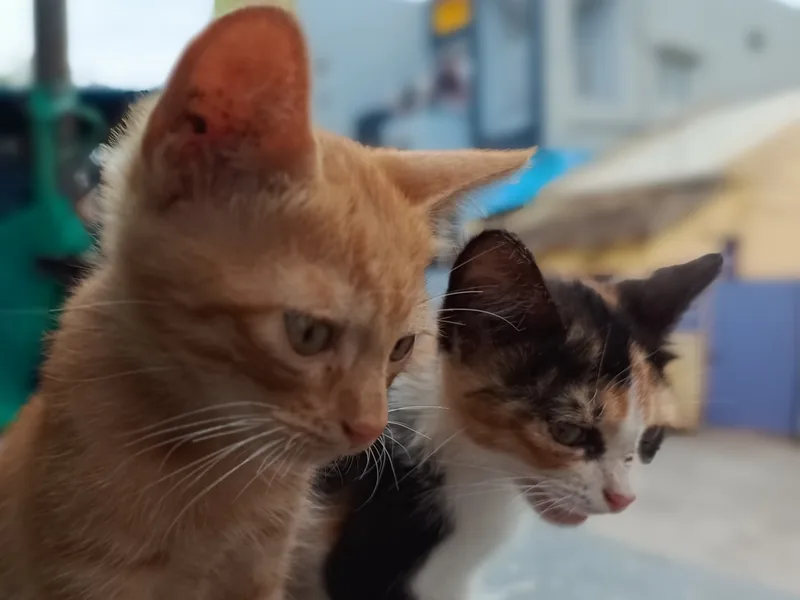
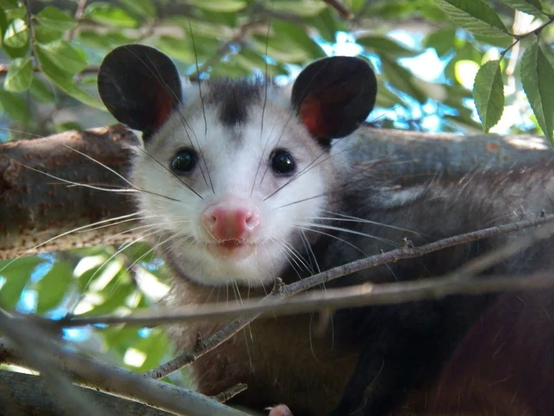
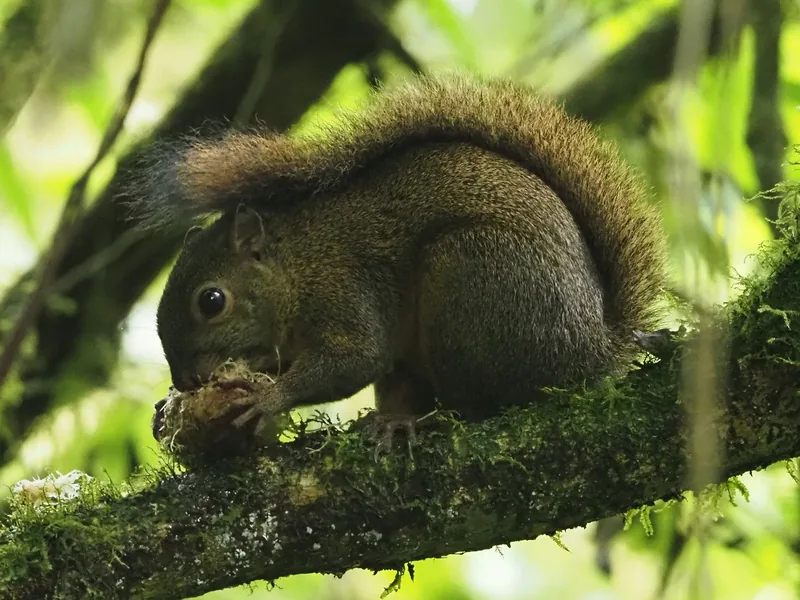
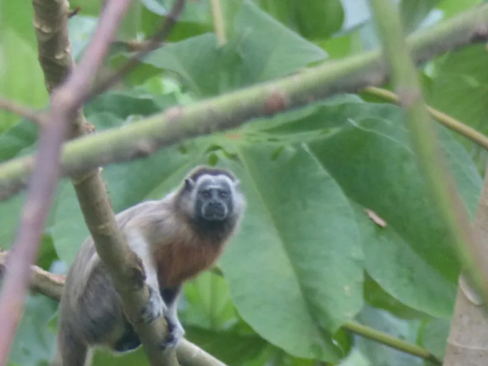
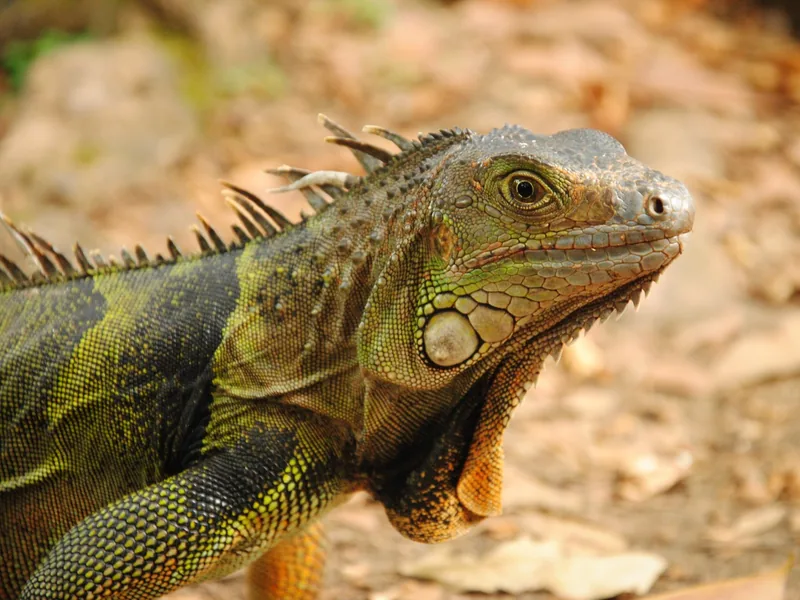
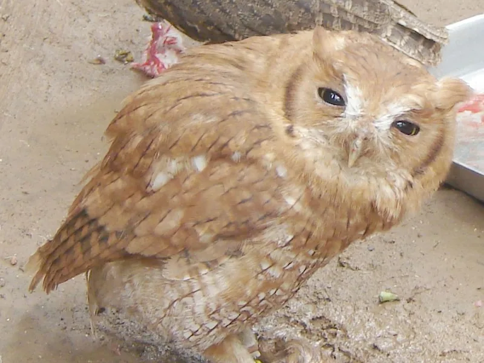

Maltrato en este momento
Alguien está golpeando, envenenando o lastimando a un animal.
Llamar al 123 Después, denuncia ante la Fiscalía (Línea 122).Líneas oficiales en Colombia para denunciar maltrato, reportar animales heridos y rescatar fauna silvestre.
Emergencia ahora: Línea 123Elige la situación y te decimos a dónde comunicarte primero.

Alguien está golpeando, envenenando o lastimando a un animal.
Llamar al 123 Después, denuncia ante la Fiscalía (Línea 122).
Un perro o gato en la calle, atropellado, enfermo o sin hogar.
Reportar a la fundación O escríbenos al WhatsApp 302 433 8944.
Zarigüeyas, aves, ardillas, serpientes o fauna en tráfico ilegal.
Ver autoridad de mi región ¿Qué hacer mientras llega la ayuda?Maltrato en curso, delitos y emergencias en vía pública.
123Grupo Especial de Lucha contra el Maltrato Animal (Ley 1774 de 2016 y Ley Ángel).
122Orientación ciudadana y reporte de casos ante la Policía en cualquier región.
018000 910 112Animales heridos, abandonados o perdidos. Te orientamos y activamos voluntarios.
302 433 8944En Medellín y el Valle de Aburrá es común encontrar estos animales en parques, techos y patios. No son mascotas: si ves uno herido, atrapado o en venta, repórtalo.




Atienden fauna silvestre y casos de maltrato en su territorio. ¿Tu ciudad no aparece? Mira qué hacer.
Rescate, atención veterinaria y adopción de animales de compañía. Si el maltrato está pasando o el animal puede morir, llama primero al 123.
(604) 385 5560Para casos que no son urgentes: negligencia, abandono, acumulación de animales o maltrato en viviendas. Puede imponer multas.
Denunciar en líneaMedellín, Bello, Itagüí, Envigado, Sabaneta y demás municipios del área.
304 630 0090Bogotá. Los casos de gravedad alta deben reportarse a la Línea 123.
(601) 439 9801Rescate y atención de fauna silvestre en Cali. Correo: faunasilvestre@cali.gov.co
(602) 653 0869Estas opciones funcionan en cualquier municipio de Colombia.
Las entidades pueden cambiar sus números. Si una línea no responde, llama al 123 o consulta el portal oficial de la entidad. Última revisión: octubre de 2026.